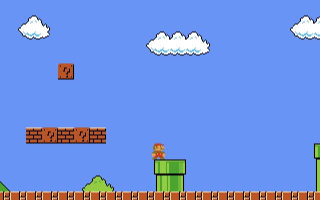
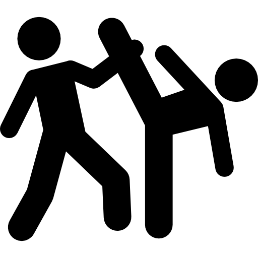
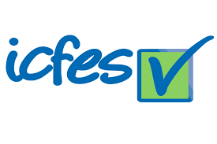

Era un dia 17 de octubre de 2004, casi a media noche habia una pereja conformada por Luis Alejandro Galvis y Carmen Helena Pinilla, ellos esperaban un niño para noviembre, sin embargo, el niño nacio el mismo dia casi a media noche por cesarea y prematuro, a ese niño se le daria un nombre, Luis Santiago
En este interludio explicare un poco de mi, nacido en una familia de madre recientemente cristiana que tuvo una hija con su ex-esposo la cual es mi hermana mayor katerine de 9 años y un padre que era el 3er Luis Galvis de mi familia paterna y que me llamó asi para seguir el chiste de mi familia de Luis Galvis, Luis Santiago Galvis Pinilla es mi nombre completo, nacido en bogota a las 11:57 de la noche aproximadamente y prematuro de un mes, fui cuidado tanto por mi nucleo familiar como por mis abuelos y tios maternos, de los ultimos destaca mi tia Magola, la cual me cuidaba seguido, en su casa habia una vieja maquina de arcade, segun mi familia yo ya jugaba en esa maquina desde los 3 años, especificamente mario, no recuerdo mucho de eso pero aparentemente alli empezo mi gusto a la tecnologia

En este año entre a un lugar lleno de cosas buenas y malas, altos y bajos, el colegio donde me la pase toda mi vida, el gimnasio los arrayanes, tambien en este año como todo niño de 4 comence a pensar mas activamente y desde ahi ya no me es tan dificil recordar... a largo plazo.
a esa edad ya aumentaba cada dia mas mi gusto por la tecnologia y juegos a traves de un algo joven youtube, mi imaginacion fue mejorada por los mundos creados por los desarrolladores y la curiosidad de saber como funcionaban.
Sufri en primaria bastante puesto que al ser alguien debil y pequeño sufri de bullying, pero gracias a eso descubri un gusto por el taekwondo.

este año esta en el interludio pero es especial para mi, por eso lo pongo separado, es el año que nacio mi sobrino yoab, el nacio de mi hermana y de su novio de esa epoca, ella lo crio sin el, el no se quiso meter con el bebe, mi familia apoyo a mi hermana y no me metere mas en esto.
en este interludio pasaron muchas cosas personales que me guardare, tambien perdi mi gusto por el futbol, deje de ser de los mejores del salon excepto en informatica e ingles (Lo cual me ayudaria mas tarde), por asuntos personales me volvi bastante asocial y me encerre mas en los juegos y videos que impulsaban mi curiosidad y me ayudaron a elegir la carrera, no me arrepiento pero me gustaria haber sido mas sociable.
en este tiempo llego la pandemia, me ayudo en algunos temas personales, tambien hice cursos gratuitos de coursera sobre blender y videojuegos, la pandemia no fue muy agradable pero al menos me ayudaria hasta hoy
Me gradue de mi colegio bachillerato, como alguien totalmente distinto al niño pequeño que entro a ese colegio a los 4 años, ya estaba casi decidido a que carreras entrar, mis elecciones eran ingenieria informatica, ingenieria de sistemas y diseño grafico... me prepare mucho para mi icfes y estudie bastante, mi puntaje no fue el mejor y no supere a mis amigos mas inteligentes pero ese puntaje era el mio, no era malo y senti que mi esfuerzo valio la pena, ese año me postule para una beca en la sabana, la cual no consegui pero quede enamorado de el enfoque de la universidad.

Entre a La universidad de la sabana, a ingenieria informatica, aunque las matematicas no son mi fuerte con esfuerzo logre un buen icfes y la universidad no iba a derribar mi persistencia a no perder.
TIMESKIP
superare todas las adversidades, pasare la universidad sin repetir una sola materia y completando el minor de diseño de videojuegos de la universidad, para poder crear lo que me dio la imaginacion de niño e inspirar a otros niños a imaginar como cuando yo era un niño, mi sueño es crear un videojuego del cual me sienta orgulloso, un juego que yo jugaria y que me llene.
Espero en un futuro poder especializarme en el area de videojuegos y codigo en general ya que es mi parte favorita de mi carrera, poder ver cursos sobre eso y poder profundizar en ese nicho para volverlo mi trabajo y para concretar mi sueño, tambien me gustaria aprender mas idiomas como japones o italiano, no creo que me quede en colombia por mas que añe este pais, quiero que mis futuros hijos tengan las mejores oprtunidades.